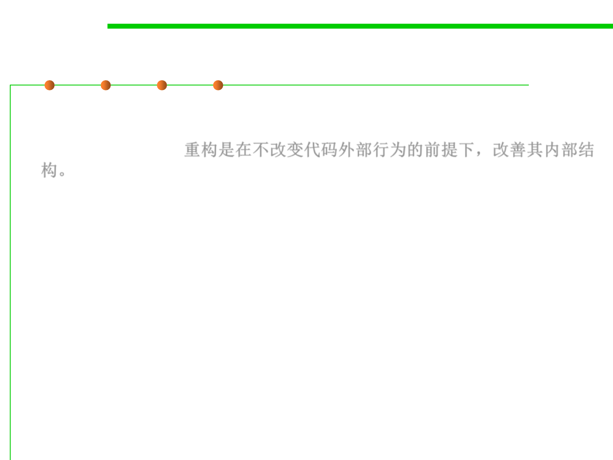

Refactoring(重构)
2.2 Process, Systems, and Tools of Software Construction
▪ Refactoring is the process of changing a software system in such a way
that it does not alter the external behavior of the code yet improves its
internal structure. 重构是在不改变代码外部行为的前提下，改善其内部结
构。
– Incurs a short-term time/work cost to reap long-term benefits, and a long-term
investment in the overall quality of your system.
▪ Refactoring is:
– restructuring (rearranging) code...
– ...in a series of small, semantics-preserving transformations (i.e. the code keeps
working)...
– ...in order to make the code easier to maintain and modify
▪ Refactoring is not just any old restructuring
– You need to keep the code working
– You need small steps that preserve semantics
– You need to have unit tests to prove the code works 通过单元测试确保代可工作